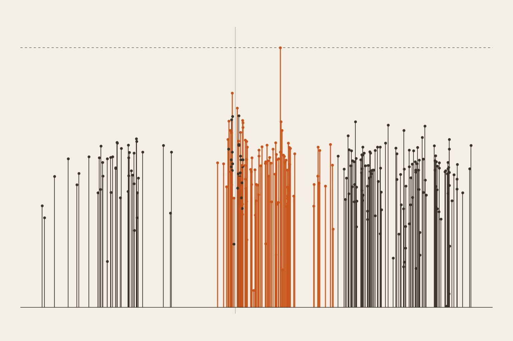
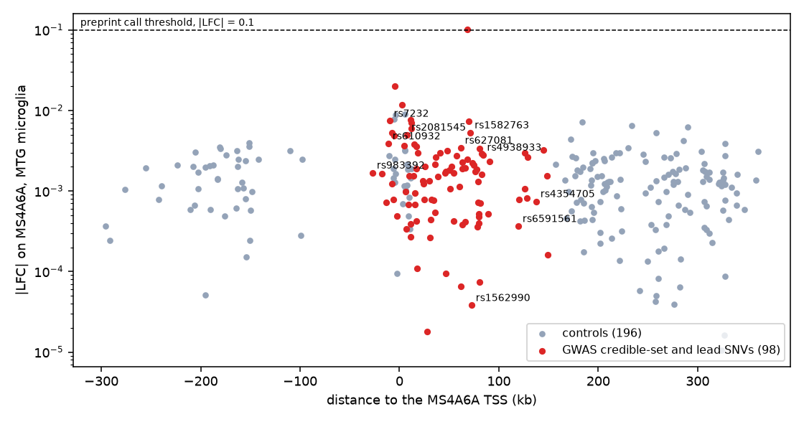
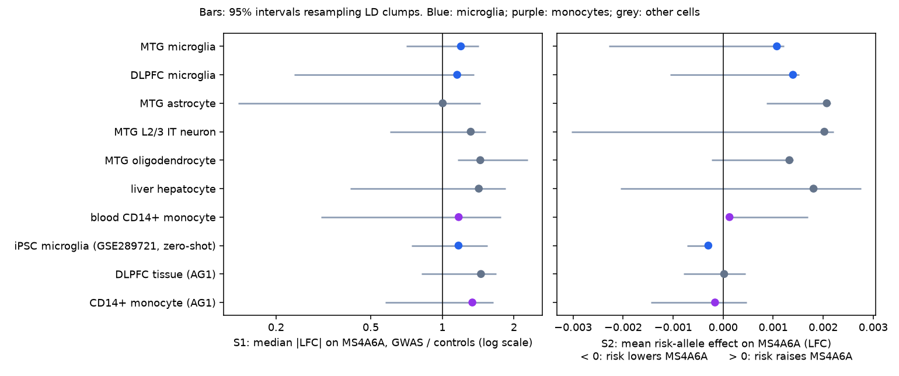
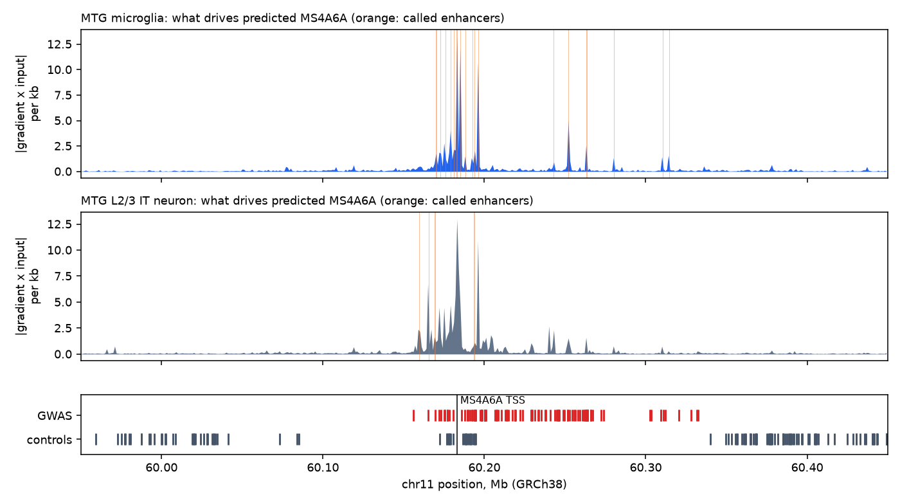
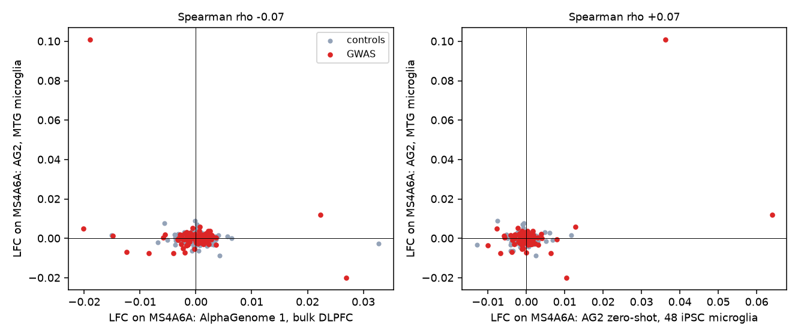

← Research·Experiments·
AlphaGenome 2 does not predict which way the MS4A Alzheimer’s risk variants move MS4A6A in microglia
AlphaGenome 2, released this week, predicts what a DNA variant does to gene expression in one chosen cell type, including microglia, the brain’s immune cells. This note asks it a question written down before any control was scored: at the MS4A Alzheimer’s risk locus, do the risk variants change MS4A6A in microglia, and which way? They move it no more than matched controls once distance to the gene is held fixed, not specifically in microglia, and in no direction the model can be trusted on here.

Summary: the short answer and the key results
In short
Does AlphaGenome 2 say which way the MS4A Alzheimer’s risk variants push MS4A6A in microglia?
No. Common variants near the MS4A genes on chromosome 11 raise Alzheimer’s risk. A hypothesis built on an earlier screen says that lowering MS4A6A in microglia should move them toward a healthier state. If risk alleles raise MS4A6A, that fits. AlphaGenome 2 scored 98 risk-locus variants and 196 matched, unlinked controls in microglia and six other cell types. At equal distance to the gene, the risk variants changed predicted MS4A6A no more than the controls did (0.90x [0.53, 1.53]). The changes were no larger in microglia than in cells that barely express the gene. The mean risk-allele effect, +0.0011 [−0.0023, +0.0012], spans zero. The predictions are tiny: a median change of 0.0015 on a log scale, where the model’s own threshold for calling an effect is 0.1. Measured eQTLs in blood do have a direction: the risk allele raises MS4A6A at 92 of 92 variants. The model’s signs agree with them at 40 of 96 variants, which is chance. Under the rule fixed in advance, the verdict is inconclusive. These are predictions, not experiments, and nothing here is clinical.
Key results
| What we tested | Result (MS4A6A, middle temporal gyrus microglia) | Compared with |
|---|---|---|
| Do risk variants move MS4A6A more than unlinked controls at equal distance to the gene? | No: 0.90x [0.53, 1.53] (98 risk variants, 196 controls) | Raw ratio of medians 1.20 [0.71, 1.42], before distance is held fixed |
| Is the effect specific to microglia? | No: the same variants change MS4A6A more in astrocytes, neurons, oligodendrocytes and liver cells (microglia ÷ other 0.48 to 0.62) | Those cells barely express MS4A6A |
| Does the risk allele raise or lower MS4A6A? | Undecided: mean +0.0011 [−0.0023, +0.0012]; 1 of 98 risk variants passes the model’s call threshold, and it passes in astrocytes and oligodendrocytes too | Measured in blood (GTEx): the risk allele raises MS4A6A at 92 of 92 variants |
| Do the model’s signs match measured eQTLs? | No better than a coin: 40 of 96 agree in microglia | AlphaGenome 1 in brain tissue: 50 of 96 |
| What does AlphaGenome 2 add? | Microglia as a condition, and enhancer calls: 17 MS4A6A enhancers in microglia against 5 in a neuron; one fine-mapped lead (rs7232) sits in one | AlphaGenome 1 has no microglia; its per-variant effects correlate with AlphaGenome 2’s at −0.07 |
01Introduction
Take rs1582763, the strongest Alzheimer’s risk signal near the MS4A genes. Its A allele lowers the odds of the disease by about 9% per copy, and in blood it lowers the expression of a nearby gene, MS4A6A. Ask AlphaGenome 2 what that A allele does to MS4A6A in microglia, and it answers −0.0053 on a log scale: about half a percent. That is too small to tell from the model’s own noise, and the rest of this note shows that most of the locus looks the same.
What is known. Common variants in the MS4A gene cluster are among the established genetic risk factors for late-onset Alzheimer’s disease (Bellenguez et al., 2022). The alleles that raise soluble TREM2 in spinal fluid lower that risk, and rs1582763 changes MS4A4A and MS4A6A expression in several tissues (Deming et al., 2019). AlphaGenome 2 predicts a variant’s effect on gene expression in one cell type at a time. Its preprint reports that it doubles recall of causal single-cell eQTLs at 90% precision over AlphaGenome 1, and that its genome-wide variant calls implicate microglia in Alzheimer’s disease.
What is missing. A test at one locus, of the kind a biologist would run before acting: does the model say which way the risk alleles push a candidate gene in the cell type that matters, against controls, and does it agree with what has been measured?
At the MS4A Alzheimer’s locus, do the risk variants change AlphaGenome 2’s predicted MS4A6A expression in microglia more than matched controls do, specifically in microglia, and in which direction?
What this note does. It runs that test with a decision rule fixed before any control was scored. Its contributions:
- A negative result at a well-studied locus: no excess effect at equal distance, no microglial specificity, no reliable direction.
- A known-answer check that any variant-effect prediction should carry: the model’s signs against measured eQTLs, here at chance.
- Controls that are matched and unlinked, which turn out to need a distance adjustment, and code that reruns every number from cached results in seconds.
What would count as an answer. Set before scoring, in microglia from the middle temporal gyrus, and checked in a second microglia condition:
- At least one risk variant passes the preprint’s call threshold, a log fold change above 0.1.
- Risk variants change MS4A6A more than controls: the 95% interval of the ratio of medians lies above 1.
- Direction: the mean effect of the risk allele has an interval wholly above 0 (risk raises MS4A6A, consistent with the hypothesis) or wholly below 0 (against).
- Prefrontal-cortex microglia give the same sign.
All four, with the interval above 0, would count as consistent; the first, second and fourth with the interval below 0, as against; anything else, inconclusive.
02Setup
2.1 Biology 101, for software engineers
No biology is needed to follow this note, but a little helps. Here is the minimum, with a programming analogy for each idea.
- DNA is the source code; a gene is a function. Every cell holds the same 3 billion letters (A, C, G, T). A gene is a stretch that encodes one product. Most of the rest is regulatory config: switches that decide when, and in which cells, each gene runs.
- Expression is a live call count. A gene’s expression is how much of its RNA a cell is making right now. Different cell types run different genes from the same code, the way one binary behaves differently under different config.
- Microglia are the brain’s immune cells. They clear debris and respond to damage. Many Alzheimer’s risk genes are expressed mostly in microglia, which is why they are the cell type in question here. MS4A6A is one of them: a membrane protein made by microglia and by blood monocytes, and almost not at all by neurons.
- A variant is a one-letter diff. At some positions people differ: one person has G, another A. The two versions are alleles. Most are harmless; some change how strongly a nearby gene is switched on.
- A GWAS is a correlation search across the genome. Genotype hundreds of thousands of people with and without a disease, and ask at each of millions of positions whether one allele is more common in cases. The risk allele is the one that is. A GWAS finds correlations, not causes.
- Linkage disequilibrium (LD): variants travel in blocks. Nearby variants are inherited together, like files that are always committed together. So a GWAS flags a whole block of correlated variants, and the causal one is hidden among them. r² measures how tightly two variants travel together (1 = always, 0 = independently).
- Fine-mapping and credible sets. Statistical fine-mapping narrows a block to a credible set: the variants that, with 95% probability, include the causal one. Each gets a PIP, its probability of being the causal one.
- An eQTL is a variant that changes a gene’s expression, measured. GTEx measured gene expression in 49 tissues from about 800 donors and tested every common variant. That is the measured counterpart of what AlphaGenome predicts. GTEx has blood, but not microglia.
- An enhancer is a remote switch. A short stretch of DNA, often tens of thousands of letters from its gene, that turns the gene up in some cell types. A variant inside an enhancer is a plausible way to change a gene’s expression.
| Term | In one line |
|---|---|
| Allele | One version of a DNA position (G or A) |
| Risk allele | The allele more common in people with the disease |
| LD, r² | How tightly two nearby variants are inherited together (0 to 1) |
| Credible set, PIP | The variants that probably contain the causal one, each with its probability |
| eQTL | A variant measured to change a gene’s expression |
| LFC (log fold change) | Natural log of predicted expression with the ALT allele over the REF allele: +0.1 is about 10% more |
| TSS | Transcription start site: where a gene starts being read |
| Enhancer | A remote DNA switch that turns a gene up in some cell types |
2.2 What AlphaGenome 2 does, on one variant
AlphaGenome 2 reads 1 million letters of DNA together with a condition: a cell type in a tissue, such as “microglial cell, middle temporal gyrus”. It then predicts what that cell would do with every gene in the window. To score a variant, it runs twice, once with each allele, and reports the change in each gene’s predicted expression. The condition can also be given zero-shot, as raw single-cell counts from a few dozen of your own cells. This note uses both: seven reference conditions, and 48 iPSC-derived microglia from a public dish (GEO GSE289721) in three random draws.
A worked example, rs1582763 (G>A, 71 kb from the MS4A6A start). In microglia, AlphaGenome 2 predicts that A changes MS4A6A by −0.0053. A is the protective allele, so the risk allele G is predicted to raise MS4A6A by about 0.5%. In blood, GTEx measured A lowering MS4A6A, with a normalised effect of −0.109 (p 7 × 10−12). The signs agree for this variant. Across the locus, as section 4.3 shows, they agree no more often than chance.
2.3 Variants and controls
- Risk variants (98 SNVs). Every single-letter variant in the 95% credible sets overlapping chr11:59.85–60.55 Mb, from five Alzheimer’s GWAS on the Open Targets Platform: Bellenguez 2022, Schwartzentruber 2021, Jansen 2019, Lake 2023 and FinnGen R12. Six leads named in papers are added (rs1582763, rs983392, rs6591561, rs610932, rs4938933, rs1562990). The risk allele comes from the credible-set effect sign or from the paper; 93 variants carry one. In LD terms, the 98 are 4 clumps (r² ≥ 0.5), one of 91 variants. The locus holds about four independent pieces of evidence, not 98.
- Controls (196). Two per risk variant, from the same window. Each is a common SNV (European frequency at least 1%), in no credible set, and has r² below 0.1 with every risk variant, all measured in the 1000 Genomes high-coverage panel. Each is the nearest available match on allele frequency and on log distance to the MS4A6A start. The r² rule matters: a control in LD with the risk block is a risk variant under another name.
- A matching that could not be done. The risk block covers the stretch 10 to 100 kb past the gene. So unlinked controls sit further out: median log10 distance 5.32 against 4.68, about 210 kb against 48 kb. The rule therefore pre-registered a second comparison that holds distance fixed (section 4.1).
2.4 Conditions and readout
| Role | Condition | Predicted MS4A6A expression |
|---|---|---|
| Primary | Microglia, middle temporal gyrus (the region profiled by the SEA-AD atlas) | 4.50 |
| Microglia replicate | Microglia, dorsolateral prefrontal cortex | 4.47 |
| Non-microglia controls | Astrocyte, L2/3 IT neuron, oligodendrocyte (all middle temporal gyrus); liver hepatocyte | −1.90, −3.28, −2.04, −0.37 |
| Myeloid comparator | CD14+ monocyte, blood (expected to share MS4A6A regulation) | 5.63 |
| Zero-shot | 48 iPSC microglia from GSE289721 (non-targeting guides, untreated), 3 draws | n/a |
| Baseline model | AlphaGenome 1: prefrontal cortex tissue and CD14+ monocytes (it has no microglia) | n/a |
The expression column is the model’s predicted level of MS4A6A on its own log scale, median over variants; higher means more. It matches the biology: high in microglia and monocytes, low in neurons. The readout is the model’s recommended gene-level score, the log fold change of MS4A6A (ALT over REF), on each condition’s observed track, meaning one trained on real data for that condition. For the middle temporal gyrus microglia, that track is single-nucleus RNA-seq from SEA-AD (Gabitto et al., 2024).
03How the study was run
- Read the preprint and the SDK’s source before writing code; list the supported conditions (about 2,800 human ones, microglia among them).
- Build the variant table: 5 Open Targets studies, 147 credible-set SNV rows, 6 literature leads, 2,024 common SNVs in a 700 kb slice of 1000 Genomes; 98 risk variants and 196 controls.
- One probe call (rs1582763, microglia, LFC −0.0053) to learn the output format.
- Pre-register the conditions, readout, statistics and decision rule; commit before scoring.
- Score: 294 variants × 7 reference conditions, × 3 zero-shot draws, and × 1 AlphaGenome 1 call. 3,168 calls in about 15 minutes, none failed.
- Enhancers: input gradients and predicted single-cell ATAC for MS4A6A in microglia and in a neuron (4 calls).
- Analyse against the rule; then the GTEx sign check, added after the rule was fixed.
| Fixed before any control was scored | Changed or added after reading results |
|---|---|
| The variant sets, the matching and LD rules, the seven conditions and the zero-shot cells, the readout track, the four statistics, the clump bootstrap, and the decision rule with its three outcomes | The GTEx known-answer check (section 4.3) was added after the verdict, and it does not enter the verdict. Imputed tracks were dropped from the shipped score table to keep it small; the analysis never read them |
Conditions: the AlphaGenome non-commercial API at four parallel workers, about one second per call; analysis on a laptop CPU in seconds. Every response is cached per variant, so a rerun makes no calls. Cost: $0.
04Results
Five findings:
- 4.1 Risk variants move MS4A6A no more than controls once distance is held fixed.
- 4.2 The effects are not microglia-specific; cells that barely express MS4A6A show larger ones.
- 4.3 The direction is undecided, and the model’s signs agree with measured eQTLs at chance.
- 4.4 AlphaGenome 2 finds microglial enhancers for MS4A6A, but the risk variants are not enriched in them.
- 4.5 Against AlphaGenome 1, the gain is the cell type and the enhancer map, not the variant effects.
4.1 Risk variants move MS4A6A no more than controls once distance is held fixed
In microglia, the median risk variant changes predicted MS4A6A by 0.0015 (absolute log fold change) and the median control by 0.0013: a ratio of 1.20 [0.71, 1.42]. Holding distance to the gene and allele frequency fixed, the ratio is 0.90x [0.53, 1.53]. Within 30 kb of the gene start (38 risk variants, 23 controls) it is 0.94x. Figure 1 shows why the raw ratio leans above 1: predicted effects are largest near the gene, and the risk variants sit there.

The single variant past the threshold, rs636317 (PIP 0.019, 69 kb past the gene start), is predicted to raise MS4A6A by 0.10 for the risk allele. It passes the same threshold in prefrontal microglia (0.12), astrocytes (0.10) and oligodendrocytes (0.10). One low-probability variant out of 98 meets criterion 1 of the rule, but that is not a microglial signal.
4.2 The effects are not microglia-specific; cells that barely express MS4A6A show larger ones
For the same 98 risk variants, the median change in MS4A6A in microglia is 0.62 times that in astrocytes, 0.51 in a neuron, 0.48 in oligodendrocytes and 0.56 in liver cells. Microglia show smaller changes than every non-microglial cell type. Figure 2 puts the two pre-registered statistics side by side in every condition.

A cell that hardly makes a gene has a small denominator in its fold change, so small absolute changes become large relative ones. That is the boring explanation, and it fits: the largest changes appear where MS4A6A is predicted lowest. Only the oligodendrocyte’s ratio has an interval above 1 (1.44 [1.16, 2.28]), and that cell type was a control.
4.3 The direction is undecided, and the model’s signs agree with measured eQTLs at chance
The mean effect of the risk allele on MS4A6A in microglia is +0.0011 [−0.0023, +0.0012]; 41% of the 93 variants with a known risk allele push it up. In prefrontal microglia it is +0.0014 [−0.0011, +0.0015]. Both intervals span zero, so the rule’s direction criterion is not met.
Measured data do have a direction. Of the 98 risk variants, 96 are significant eQTLs for MS4A6A in GTEx whole blood, with ALT-allele effects from −0.13 to +0.13. At all 92 with a known risk allele, the risk allele raises MS4A6A. If microglia behaved like blood, that would be the direction the hypothesis needs. But AlphaGenome 2’s predicted signs agree with the measured ones at only 40 of 96 variants in microglia, and 49 of 96 in its own blood monocytes, where blood should be easiest. That is chance. With every variant in strong LD, these counts are not independent, so read the sign, not a p-value.
| Model and condition | Signs agreeing with GTEx blood | Spearman with measured effect |
|---|---|---|
| AlphaGenome 2, middle temporal gyrus microglia | 40 of 96 | −0.03 |
| AlphaGenome 2, prefrontal microglia | 53 of 96 | +0.09 |
| AlphaGenome 2, blood CD14+ monocyte | 49 of 96 | −0.07 |
| AlphaGenome 2, zero-shot iPSC microglia | 46 of 96 | −0.07 |
| AlphaGenome 1, prefrontal cortex tissue | 50 of 96 | −0.09 |
| AlphaGenome 1, CD14+ monocyte | 47 of 96 | −0.21 |
The named leads show the same scatter. Below, a positive number means the risk allele raises MS4A6A:
| Lead (risk allele) | From gene start | Microglia, MTG | Microglia, prefrontal | iPSC microglia, zero-shot | AlphaGenome 1, prefrontal tissue |
|---|---|---|---|---|---|
| rs1582763 (G), Bellenguez 2022 lead | +71 kb | +0.0053 | +0.0000 | +0.0011 | +0.0003 |
| rs7232 (T), FinnGen and Lake 2023 lead | −10 kb | +0.0074 | +0.0033 | −0.0064 | +0.0040 |
| rs983392 (A), Lambert 2013 | −27 kb | −0.0017 | −0.0008 | −0.0009 | −0.0006 |
| rs2081545 (C), Jansen 2019 lead | +8 kb | +0.0050 | +0.0033 | +0.0009 | +0.0023 |
| rs627081 (T), Bellenguez 2022 credible set | +62 kb | −0.0034 | −0.0013 | −0.0011 | −0.0017 |
Every lead’s predicted change is below 1%, a tenth or less of the call threshold. Three of the five point the hypothesis’s way in microglia and two do not.
4.4 AlphaGenome 2 finds microglial enhancers for MS4A6A, but the risk variants are not enriched in them
From input gradients and predicted chromatin accessibility, AlphaGenome 2 calls 17 MS4A6A enhancers in microglia and 5 in a neuron. Six of the 98 risk variants sit inside a microglial enhancer, against 4 of 196 controls (Fisher one-sided p 0.07). At equal distance, the smoothed gradient at risk variants is 1.17x that at controls [0.92, 1.49], against 1.31x in the neuron. Figure 3 shows the map.

enhancer_scoring (gradient and predicted single-cell ATAC thresholds as shipped). Bottom: positions of the 98 risk variants and 196 controls. Drawn by 4_enhancers.py; calls in results/enhancers.csv.The microglial map is the one thing here a microglia-specific model adds. Most enhancers sit within 15 kb of the gene start, and three lie 70 to 130 kb out, inside the risk block. rs7232, the lead of the FinnGen and Lake 2023 credible sets (PIP 0.9 in Lake 2023), sits in one at the 3′ end of MS4A6A, 10 kb from its start. rs1582763 sits in none. Without a measured effect, a variant in an enhancer is a candidate to test, not an explanation.
4.5 Against AlphaGenome 1, the gain is the cell type and the enhancer map, not the variant effects
AlphaGenome 1, scored in prefrontal cortex tissue (bulk, with microglia a small share of cells), gives the same verdicts: a raw ratio of 1.45 [0.82, 1.68] that disappears at equal distance (1.26x [0.76, 2.07]), and a direction of +0.00002 [−0.00079, +0.00044]. Its per-variant effects correlate with AlphaGenome 2’s microglia at −0.07. Within AlphaGenome 2 the agreement is not much higher. Its two microglia conditions correlate at +0.19. Its zero-shot iPSC microglia correlate with the reference microglia at +0.07, and three random draws of 48 cells correlate with each other at +0.21 to +0.26. Figure 4 shows two of these comparisons.

When per-variant predictions barely agree across two microglia references, or across three draws of the same dish, the effects being compared are near the model’s noise floor. That is consistent with the preprint’s own caveat that AlphaGenome 2 “recovers only a minority of fine-mapped eQTLs” at high precision and can underestimate causal effects.
05Compared with prior work
| AlphaGenome 2 preprint (2026) | Deming et al. (2019) | This note | |
|---|---|---|---|
| Scope | Genome-wide; about 7 million variants, 510 cell conditions | The MS4A locus | The MS4A locus |
| Microglia implicated in Alzheimer’s | ✓ (condition enrichment of GWAS calls) | Macrophages as a proxy | Not at this locus: no microglial specificity |
| Measured expression effects | Benchmarks on fine-mapped eQTLs | ✓ rs1582763 changes MS4A4A and MS4A6A | GTEx blood: the risk allele raises MS4A6A at 92 of 92 |
| Predicted direction at this locus agrees with measurement | Not reported | — | ✗ (40 of 96) |
| Matched, unlinked controls; distance-adjusted | Distance-matched negatives in benchmarks | — | ✓ |
The preprint’s genome-wide claims are about rates across thousands of loci. A miss at one locus does not contradict them: at high precision the model is meant to catch a minority of causal variants. This note says only that MS4A is not one of the loci where it helps.
06Implications for AI in biology
A variant-effect model will always return a number, with a sign, in any cell type you ask for. Here the median was about a sixtieth of the model’s own call threshold, did not track measured eQTLs, and were larger in cells that do not use the gene. Reading a direction off them would have produced a confident story either way. The checks that caught this were cheap: unlinked controls, a distance adjustment, the same variants in the wrong cell types, and the model’s signs against a measurement it should get right. For the hypothesis that motivated this test, nothing changes. Its genetic half needs a measured microglia eQTL, not a prediction.
Risk: very low. The inputs are public GWAS summary results, public reference genotypes, a public iPSC-microglia dataset and predictions from a hosted model. The note scores existing common variants and designs no sequences. Not clinical; predictions are not experiments.
The recommendation in one sentence: before reading a direction from a predicted variant effect, check the model’s signs against measured eQTLs at the same locus, and compare its effects with unlinked controls at equal distance and in cell types that do not express the gene.
07What this does not show
- One locus, about four independent signals. The 98 risk variants are 4 LD clumps, and every interval is as wide as that allows. Nothing here speaks to AlphaGenome 2’s accuracy genome-wide.
- Blood is not microglia. The GTEx check tests the model’s signs where a measurement exists. Microglia may regulate MS4A6A differently; a microglia eQTL study would be the real test.
- An eQTL is not a mechanism. Even a measured risk-raises-MS4A6A direction would not show that MS4A6A, rather than MS4A4A or another gene in the cluster, carries the risk. Deming et al. point at MS4A4A for soluble TREM2.
- One readout per condition. The observed single-cell track and the recommended scorer. Imputed tracks, other genes in the window, chromatin and splicing outputs were not used.
- Controls are further from the gene. The LD block made distance matching impossible, so the comparison rests on a linear distance adjustment and a 30 kb stratum.
- Zero-shot on 48 untreated cells. Stimulated or disease-state microglia might be predicted differently; the preprint notes such states are under-represented in training.
- The precomputed AlphaGenome 2 GWAS atlas was not used. It scores many of these variants in 510 conditions and would be a cross-check.
08Reproduce it
Recompute every number and figure from the shipped results, in seconds, with no key:
experiments/alphagenome2-ms4a/reproduce.sh --scoresRerun from the sources. This takes about 3,200 AlphaGenome calls (free for non-commercial use, with ALPHAGENOME_API_KEY set) and a 700 kb range request from the 1000 Genomes panel. Every response is cached in ~/.cache/steerlab/alphagenome2-ms4a/, so a second run makes no calls:
experiments/alphagenome2-ms4a/reproduce.sh --dry-run # lists every command
experiments/alphagenome2-ms4a/reproduce.shThe printed output of each step, rerun from the cache, is in results/logs/.
09What’s next
- A measured microglia eQTL or allele-specific expression for rs7232, rs1582763 and rs636317, the three variants this note singles out.
- The same test at a locus where AlphaGenome 2’s genome-wide calls do fire in microglia, to see what a positive looks like with these controls.
- The AlphaGenome 2 GWAS atlas scores for these variants, as an independent cross-check of the per-call numbers.
10Questions and answers
Does AlphaGenome 2 predict that MS4A Alzheimer’s risk variants raise MS4A6A in microglia?
No. The mean predicted effect of the risk allele on MS4A6A in microglia is +0.0011 [−0.0023, +0.0012], an interval that spans zero. Its signs agree with measured blood eQTLs at 40 of 96 variants, which is chance.
Do the risk variants change MS4A6A more than other variants nearby?
Not once distance to the gene is held fixed: 0.90x [0.53, 1.53] against unlinked controls matched on allele frequency. The raw ratio of 1.20 comes from the risk variants sitting closer to the gene.
Which way do the risk alleles move MS4A6A in measured data?
Up, in blood: in GTEx v8 whole blood the risk allele raises MS4A6A at all 92 risk-locus variants with a known risk allele. There is no comparable measurement in microglia here.
What does AlphaGenome 2 add over AlphaGenome 1 here?
Microglia as a condition and a microglial enhancer map for MS4A6A (17 enhancers, against 5 in a neuron). Its variant effects at this locus are no more informative: neither model’s signs track the measured eQTLs.
AAppendix: data
Every number comes from a file in results/; README.md describes every field. The AlphaGenome tables carry AlphaGenome’s terms (LICENSE-NOTE.md): non-commercial, and never to be used to train models.
variants.csv: the 98 risk variants and 196 controls, with frequencies, distances, LD clumps and risk alleles.ag_scores.csv: every AlphaGenome score on MS4A6A and MS4A4A, observed tracks.per_variant_lfc.csv,summary.csv: the readout per variant and every statistic per condition.enhancers.csv,gtex_check.csv: enhancer calls; GTEx eQTLs beside predictions.conditioning_cells.h5ad: the 3 × 48 iPSC microglia used for zero-shot conditioning.
Techniques
| Design | Pre-registered case-control comparison of predicted variant effects at one GWAS locus |
|---|---|
| Controls | Matched on allele frequency and distance, unlinked (r² < 0.1); non-microglial cell types; AlphaGenome 1; measured GTEx eQTLs |
| Interpretation | Input-gradient enhancer calling (AlphaGenome 2 SDK) |
| Statistics | Percentile bootstrap over LD clumps (10,000 resamples); Mann-Whitney, Fisher and signed-rank tests reported as variant-level and optimistic; distance-adjusted regression |
Tech stack
| Data | Open Targets Platform (GraphQL), GWAS Catalog and Ensembl REST, 1000 Genomes high-coverage panel (HTTP range request, pure-Python tabix), GTEx v8 API, GEO GSE289721 |
|---|---|
| Models | AlphaGenome 2 and AlphaGenome 1 via the alphagenome 2.0.0 SDK (non-commercial API) |
| Analysis | Python, NumPy, pandas, SciPy, anndata, matplotlib |
| Compute | 3,168 API calls, about 15 minutes; analysis seconds on a laptop CPU; $0 |
References
- Gayoso, Mottram, Karollus, Novati et al. “AlphaGenome 2 predicts regulatory activity and variant effects across cell states.” Google DeepMind preprint, 2026; blog; SDK.
- Avsec et al. “Advancing regulatory variant effect prediction with AlphaGenome.” Nature, 2026.
- Bellenguez et al. “New insights into the genetic etiology of Alzheimer’s disease and related dementias.” Nature Genetics, 2022.
- Deming et al. “The MS4A gene cluster is a key modulator of soluble TREM2 and Alzheimer’s disease risk.” Science Translational Medicine, 2019.
- Schwartzentruber et al. (2021), Jansen et al. (2019), Lake et al. (2023, GWAS Catalog GCST90301303) and FinnGen R12, as fine-mapped on the Open Targets Platform; lead alleles from the GWAS Catalog.
- Byrska-Bishop et al. “High-coverage whole-genome sequencing of the expanded 1000 Genomes Project cohort.” Cell, 2022.
- The GTEx Consortium. “The GTEx Consortium atlas of genetic regulatory effects across human tissues.” Science, 2020.
- Gabitto et al. “Integrated multimodal cell atlas of Alzheimer’s disease” (SEA-AD). Nature Neuroscience, 2024.
- GSE289721, an iPSC-microglia CRISPRi screen. Journal of Neuroinflammation, 2025.
- The hypothesis tested here was written for the Prima Mente Alzheimer’s challenge.
Revision history
- Nov 11, 2026: First published.
How to cite
@misc{lie2026alphagenome2ms4a,
author = {Albert Lie},
title = {AlphaGenome 2 does not predict which way the MS4A Alzheimer's risk variants move MS4A6A in microglia},
year = {2026},
month = nov,
url = {https://albertlieyingadrian.github.io/steerlab/experiments/alphagenome2-ms4a/report/}
}